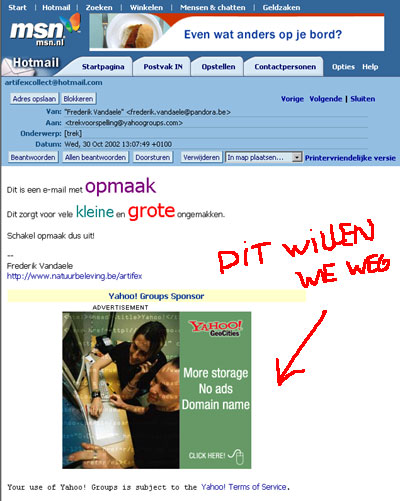
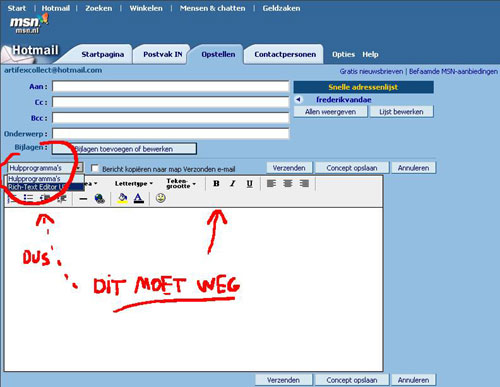
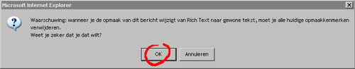
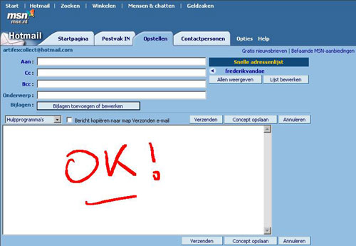

Waarom staan er in jouw berichten op de Batmail200/69 altijd reclameboodschappen (zie tekening hieronder)? En hoe komt het dat voor sommige mensen je e-mails onleesbaar zijn?
De oplossing voor deze ongemakken kent u binnen 30 seconden. Lezen dus!

Als je een nieuw bericht opstelt in Hotmail zie je links een keuzemenuutje Hulpprogramma's. Via dit menu moet je de tekstopmaak balk uitschakelen door Rich-Tekst Editor UIT te kiezen (zie hieronder)!

Je krijgt de onderstaande melding. Kies OK.

Zo! Dat is alles! Zorg dat je de opmaak-balk dus nooit ziet als je een mailtje opstelt! Onderaan zie je het goede scherm.
